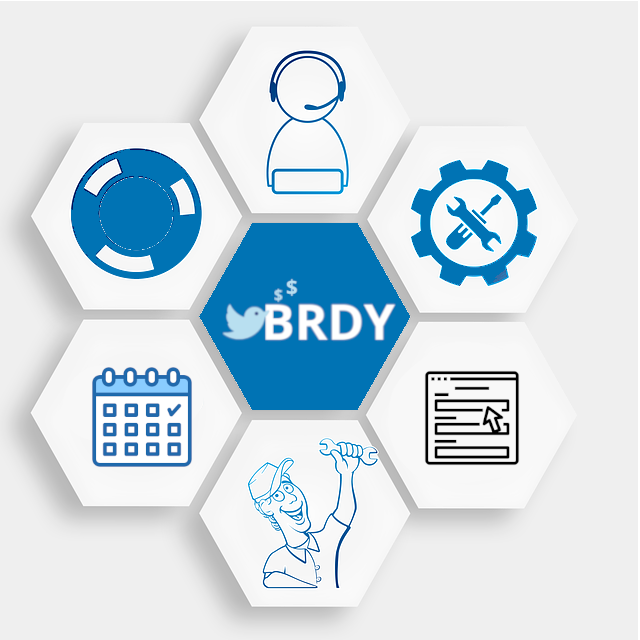

|
What is BRDY Token?
BRDY Token is tokenized "Word of Mouth" marketing. BRDY represents a first of its kind word of mouth marketing token for the real world. What's a conversation worth?Many companies pay $10, $20 even $100 for just a click to their website. What if there was a lower cost way to incentivize customers to contact you directly? Why is it important to keep marketing dollars local?If we work together in our communities to keep marketing dollars local, then all of our customers have more money to spend on goods and services. Companies can grow more quickly creating more jobs, which is better for the economy. Local Marketing should be exactly that, local. Why should you have to run 15 marketing channels to reach customers within 3 miles of your business? What is Home Maintenance Schedule?Home Maintenance Schedule ( https://homemaintenanceschedule.com ) is a "proof of concept" for BRDY Token that is focused on the Home Services market. How can my company support low cost marketing intiatives like BRDY?If you own a home services company and would like to support our efforts to provide low cost local marketing services, please visit: https://birdyleads.com. |

|